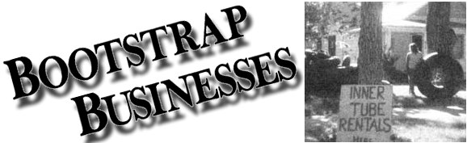

If you now operate, or have ever operated, a successful home business that was inspired by an article you read in MOTHER, tell us about it in around 500 words (write to Bootstrap Businesses, THE Mother Earth News (restricted) 105 Stoney Mountain Road, Hendersonville, North Carolina 28791). Be sure to mention when and where you started your venture and with how much "seed money", what you make (net), and anything else that might be of assistance to other entrepreneurs. If your story is used in this column, you'll re ceive [1] the satisfaction of knowing that you may help someone else start a business and [2] a free two-year new or renewal subscription to THE MOTHER EARTH NEWS (restricted)
Last spring-as I was eagerly searching through the pages of various copies of THE Mother Earth News (restricted) in hopes of finding a venture that would help me bring in some extra cash-I came across Mary B. Bowling's "River-Running Inner Tubes" (on page 106 of issue 74) and decided to give that enterprise a try.
Since I'm fortunate enough to live near a river (and a few other water-recreation spots), I knew there would be a demand for floats, and I opted to rent my tubes out on a daily basis rather than sell them ... in order to limit the labor and time involved in locating and patching used castoffs. I found that this moneymaker isn't limited to warm weather, either. During the winter, when snow covered the nearby hills, I was able to rent my inflatable rafts as sleds!
I began my business by gathering a supply of inner tubes ... purchasing some at flea markets and garage sales, and getting others from local tire stores and service stations. (Most of the latter businesses were happy to give me their punctured discards.)
With the help of an air compressor belonging to a neighbor, my husband Al and I blew up all our round rafts and marked any leaks with yellow crayon. After repairing the holes, we reinflated the floats and spraypainted an identifying "tattoo" on each of them.
In all, I spent only about $15 getting my new business going, and my operating expenses are minimal, as well. I shelled out a grand total of $5.00 for tubes (they ranged in price from 25 cents to 50 cents). A tire-patching kit and a can of bright spray paint set me back $2.98 and $1.19, respectively, and I spent $1.50 for photocopies of a list of safety rules and tubing tips that I hand out to my customers. Though I do occasionally need to replace tubes and replenish my other supplies, my steadiest continuing expense is the $4.00 I spend each week for a small ad in our local newspaper.
However-as Mary Bowling pointed out in her article-the tubes do an excellent job of advertising themselves. Stacked in the yard with a chain through their centers, the oversized airfilled doughnuts are real eyecatchers ... and I back them up with a large sign.
During the summer, when I'm dealing with river rafters, I open shop at 8:00 a.m., renting childsized tubes for $2.00 and my larger, adult-scaled, floats for $5.00 per day. I also collect a $3.00 deposit on each tube, and refund that money when my rafts are returned undamaged. When dealing with my "regulars"-people who rent from me weekend after weekend-I often give a discount or throw in an extra tube, to hold their coolers, at no charge. If a leak should develop, I usually offer the customer a free weekend of rafting to make up for any inconvenience he or she might have suffered. And over the course of my first summer, I brought in between $500 and $600 a month!
This past winter, when it snowed (finally!) in late December, I took the advice of a few of my summer customers who had urged me to rent out my rubber rapids-riders-which Al equipped with handles to use when pulling them up hills and to hang onto on the way back down-for use as inflatable sleds. I renewed my ad in the local paper at $4.00 a week, and on the very first weekend I brought in $50.
The tube rental business doesn't demand much of my time, and it is really profitable, providing me with a very handy supply of cash both summer and winter. Now, as spring brings an end to the snow season, I'm looking forward to my second summer ... and the return of the river rafters.
Mary Hagemann
Douglas, Wyo.
Ever since I began reading MOTHER (back in 1976), I'd been growing less and less content with my city job ... and Jo Frohbieter Mueller's article-on page 74 of issue 48-about making and selling stained glass objects planted the seed that finally inspired me to leave the workaday world, begin selling my handmade lace at craft shows, and eventually wind up in my present business: vending nutritious fare at these fairs.
In the beginning, I simply quit my job and devoted myself to making and marketing my tatted wares, but it always bothered me when my painstaking work went all too often overlooked while the man at the hot dog stand was getting rich selling "plastic" food. Well, it soon occurred to me that my husband's knowledge (he was a four-star chef) could help me start a concession stand that did not offer junk, and I immediately began planning menus composed of wholesome, natural foods.
My first effort at implementing the idea was a fully funded and dismal failure, though. Unfortunately, we took a "commercial" approach to our new enterprise ... and as a result that first culinary concession was doomed from the start. We made every mistake possible: purchasing expensive equipment, building a cumbersome booth, ordering tremendous quantities of edibles, and buying an "indispensable" $14,000 travel trailer. We took out several large loans in the process, and were soon penniless.
After our flop, however, my husband went back to his "safe" chef's job, and I started making plans to pursue the business in a more sensible manner. First, I contacted show directors and "booked" myself into a circuit of fairs. This time, there were no grills and expensive electrical equipment ... I planned a cold menu of vegetarian pita bread sandwiches made with fresh vegetables and garnished with various yogurt and vinegar-and-oil dressings. In total, I invested $50 in a booth made of PVC plastic and canvas, and another $50 in food.
My first show extended over a three-day weekend, and my sisters went along to help me serve the sandwiches. After our initial three hours of operation, we were running low on supplies and had to send out for more ... and by the end of the third day we'd cleared about $2,400 for our efforts! However, while I have since served at a few events where I did as well as or better than that, my usual take is between $350 and $600 on a "normal" two-day weekend.
Considerable planning and organizing is involved in this venture. I must, among other things, find shows ... contact the directors ... acquire booths ... line up supplies ... take care of licensing ... and meet all local health regulations. But the business is profitable now, and though I don't usually travel more than 50 miles from home, there are literally thousands of craft shows every year across the country, and it's conceivable that a more footloose person could operate his or her concession every weekend!
As for me, I've limited my enterprise to attending only a few shows a year ... to allow more time for parenting, which is my most important activity. Also, in between craft fairs I'm able to pursue my lacemaking-which I haven't given up, though it certainly isn't as lucrative as the concession business-and between the two ventures, I've made several lifelong friends ... bartered and traded for a houseful of decorative and functional craft items ... and, most important, realized my dream of self-reliance!
C. H. M.
Claymont, Del.
|
 |
|
|